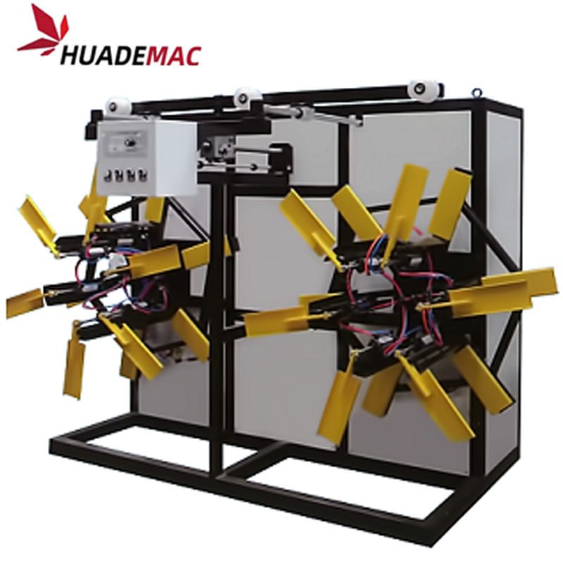

Plastic Pipe Single Dual Disk Coil
Collect finished pipe on a single- or dual-disc winding system.
Inquire about this product Prepare a detailed project brief
Equipment overview
1. The automatic coil winding machine adopts automatically winding, adjusting winding speed and winding method. Its has two disks for continuous winding.
2. The plate of this automatic coil winding machine is controlled by gas, winding adopt torque motor, with special equipment to arrange the pipe, this pipe winding machine can wind pipe well and working very stable.
3. The design has chute, the leaf can also slide in the chute, the coil diamter can be adjusted.
4. There are mainly model for HDPE/PE/PP/PPR/PVC hose pipe winding: 16-40mm single/double plate pipe winding machine, 16-63mm single/double plate pipe wiinding machine, 50-110mm single disk winding machine;
Technical specifications
Reference configurations from the product catalogue. Confirm output, dimensions and equipment selection for your material and project.
| Model | Inner Coil Diameter | Outside Coil Diameter | Coil Width | Winding Speed | Pipe Diameter | Torque Motor |
|---|---|---|---|---|---|---|
| Sps-63 Double Wider | 600-1200mm | 800-1280mm | 360-560 | 1-20m/min | 32-63 | 25N-M |
| Sps-110 Single Wider | 2500-3500mm | 1400-2000mm | 700-900 | 0.5-5m/min | 63-110 | 40N-M |
Detailed Images
Application
Equipment video
Ask about this machine
Plastic Pipe Single Dual Disk Coil